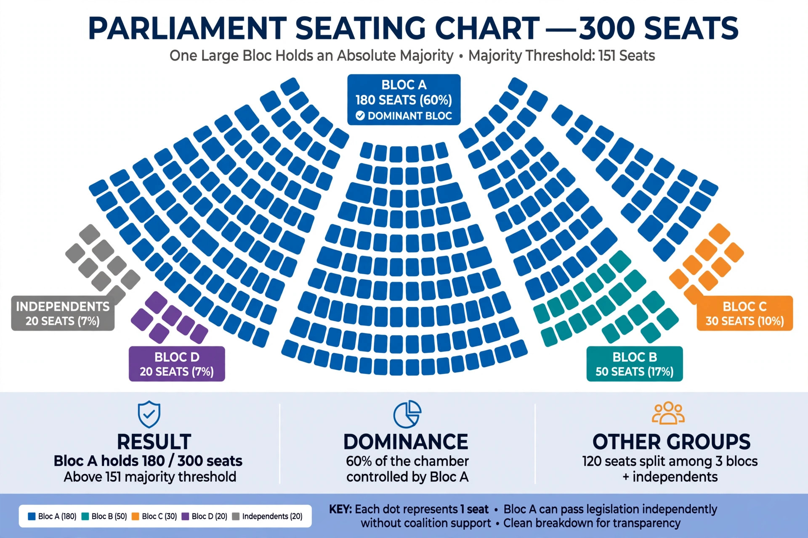

Dominant-party system

A dominant-party system, or one-party dominant system, is a political system in which one political party dominates the election results over a long period and continuously forms the government, even though opposition parties are legal and elections are competitive to a degree. It differs from a one-party state, where only the ruling party is permitted.
Causes
Dominance can arise from a party's role in a liberation struggle or independence movement, control of state resources and media, a fragmented opposition, electoral rules that reward the largest party, or the party's broad catch-all appeal. Political scientists note that dominance may persist within genuinely competitive politics, but it can also shade into electoral authoritarianism where the playing field is systematically uneven.
Examples
Frequently cited examples include the Liberal Democratic Party in Japan, the African National Congress in South Africa, the Institutional Revolutionary Party in Mexico during the 20th century, the Swedish Social Democratic Party in the mid-20th century, United Russia, and the People's Action Party in Singapore. Regional dominance within federal states — such as the "Solid South" of the US Democratic Party — is also studied under the same concept.
Decline
Dominant parties typically lose power when economic crisis, corruption scandals, generational change, or opposition coordination erode their advantage; several long-dominant parties have lost office in recent decades after decades in government.
See also: Communist party, Two-party system, One-party state.